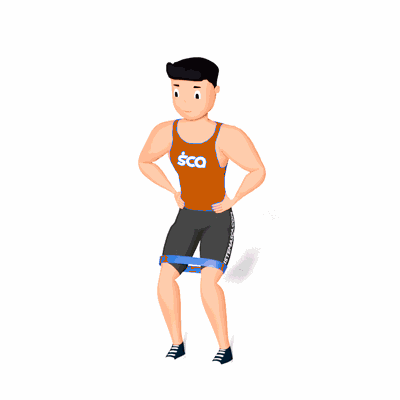

Passada Lateral com Faixa Elástica

O exercício tem como objetivo fortalecer os músculos abdutores do quadril e quadríceps.
Ficha Técnica
Tipo: Funcional
Grupo Muscular: Perna
Aparelho: Nenhum
Músculos: Nenhum
Como realizar
- Coloque uma faixa de resistência ao redor de ambas as pernas e posicione logo acima dos joelhos;
- Assuma uma posição de um quarto de agachamento, com os pés apontados para a frente e na largura do quadril;
- Com o pé direito, dê um passo para a direita cerca de 30 centímetros e, em seguida, com controle, dê um passo para a frente com o pé esquerdo a uma distância equivalente, de modo que os pés fiquem separados na largura do quadril;
- Repita na direção oposta e continue alternando as etapas de um lado para o outro.
 RC STORE
RC STORE